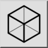

Isometrisk projeksjon
Verktøylinje/ikon:

Meny: Endre > Projeksjon > Isometrisk projeksjon
Snarvei: P, J
Kommandoer: isometric | pj
Beskrivelse
Dette verktøyet oppretter isometriske projeksjoner (og andre typer projeksjoner) av det gjeldende utvalget i tegningen.
Bruk
- Velg objektene du vil projisere.
- Start dette verktøyet.
- Velg en projeksjonstype og en synsretning for projeksjonen i verktøylinjen for alternativer.
- Sett referansepunktet for projeksjonen. Dette er punktet du vil bruke til å plassere projeksjonen i neste trinn.
- Beveg musepekeren til posisjonen der du vil opprette projeksjonen, og klikk for å sette posisjonen.